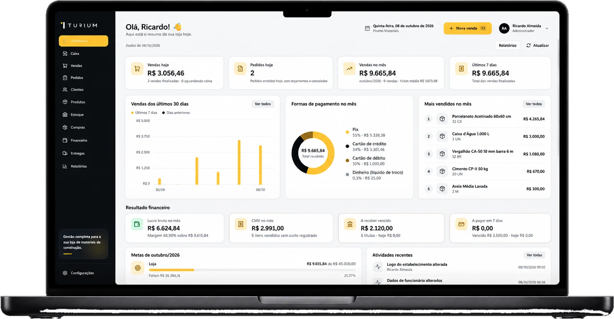
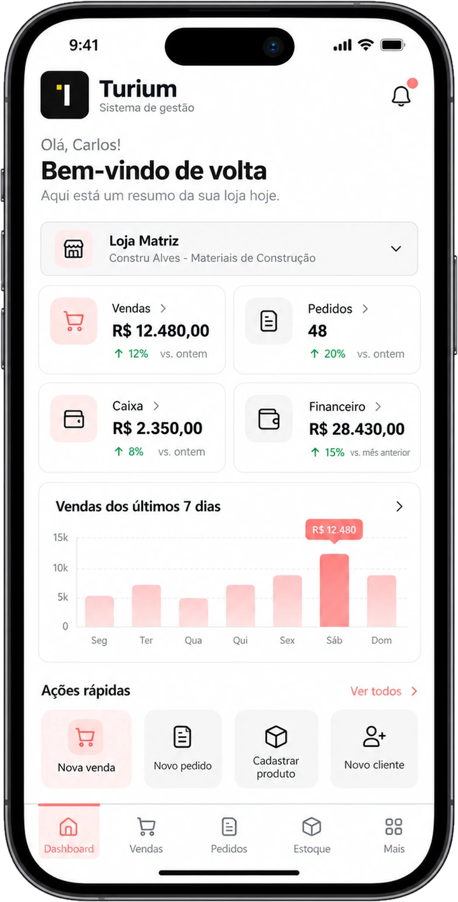
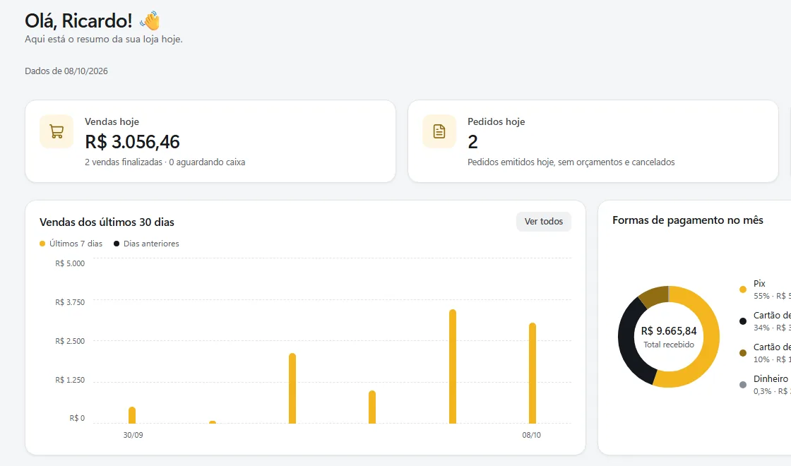
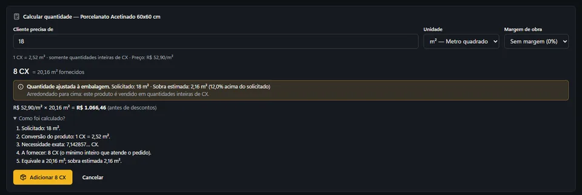
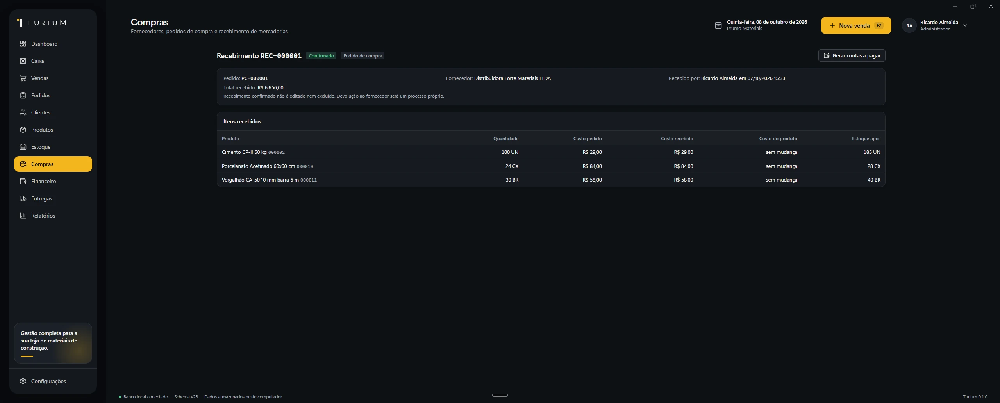
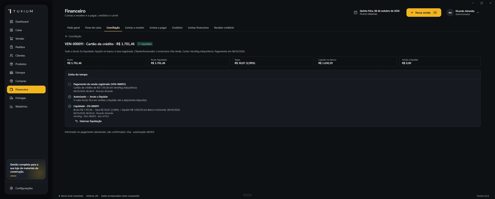
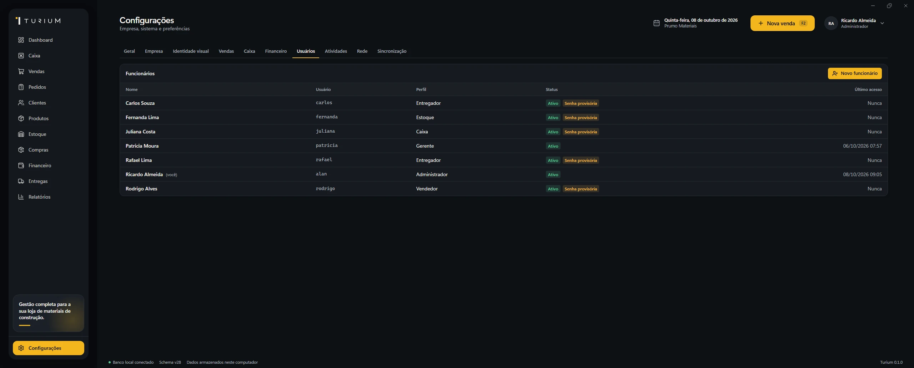

O balcão não espera a conexão
Sem internet, as vendas continuam sendo registradas no banco local, uma atrás da outra.
InternetConectada
Banco localConectado
Vendas registradas0
Gestão para materiais de construção
O Turium reúne vendas, estoque, caixa, pedidos, clientes, entregas e gestão financeira em um único sistema desenvolvido para lojas de materiais de construção.
Prefere ver ao vivo? Agendar demonstração


Setor
Feito para materiais de construção
Categorias, unidades e rotina do balcão já previstas.
Local-first
Funciona sem internet
Os dados ficam no computador da loja.
Integrado
Venda, estoque e caixa juntos
Uma venda baixa o estoque e entra no caixa.
Rede local
Vários computadores
Balcão, caixa e escritório na mesma base.
Uma venda real da base de demonstração, do primeiro item ao dinheiro na conta.
Role para percorrer os vídeos
Balcão, estoque e financeiro falam a mesma língua. Cada venda já entra no lugar certo.
O vendedor encontra o produto por código, nome ou unidade e monta o orçamento enquanto o cliente ainda está no balcão.
Informe a área. O Turium converte em caixas, considera a perda e já leva a quantidade certa para o orçamento.
O orçamento vira pedido com um clique. Pix, cartão ou dinheiro: o caixa fecha sem retrabalho.
Cada venda dá baixa na hora. Você sabe o que tem, o que falta e o que comprar.
Fluxo de caixa, contas a receber e o valor líquido de cada venda, sem planilha paralela.
O Turium foi pensado desde o início para a rotina de quem vende material de construção.
Por isso ele entende situações que sistemas genéricos normalmente complicam: caixas, metros, m², unidades comerciais, orçamentos, entregas, margem e estoque.
A mesma venda, vista pelo dono: quem fez, quando e com que permissão.
Nome, data e hora em cada pedido.
Sem entregar a senha a ninguém.
Aberto, movimentado e fechado por alguém identificado.
Cada entrada, saída e ajuste fica no histórico.
E fica registrado quem cancelou.
Sem precisar estar no balcão.
O Turium roda no computador da loja. O balcão não para porque o provedor parou.
Sem internet, as vendas continuam sendo registradas no banco local, uma atrás da outra.
Os dados ficam armazenados no computador da loja, com o banco local sempre à mão.
Abre no computador da loja e responde na hora. Tema escuro ou claro, do jeito que a equipe preferir.


Área em metros, resposta em caixas. Com perda e arredondamento.
Saldo atualizado a cada venda e a cada recebimento.

A mercadoria entra conferida e já aparece no estoque.
Entradas e saídas em uma linha do tempo clara.

Veja quanto cada venda deixa de fato no caixa.

Cada pessoa com o acesso certo para a sua função.
Mobile App do proprietário · em fase de testes
Acompanhe o resultado das suas lojas pelo celular, de onde estiver.
O app é para acompanhar. Vender, receber e movimentar estoque continuam no computador da loja. Os números chegam ao celular quando a loja está conectada à internet.
Do uso individual à operação integrada em rede: o Turium conecta vendas, caixa, gestão e atendimento em uma estrutura pensada para crescer com o seu negócio.
Representação ilustrativa do ecossistema do Turium.
Comece com uma operação simples ou evolua para uma rede integrada com gestão centralizada.
Do primeiro atendimento à gestão de uma rede de lojas. Escolha a solução que acompanha o crescimento da sua empresa.
Do balcão à gestão, num sistema que trabalha mesmo quando a internet não trabalha.